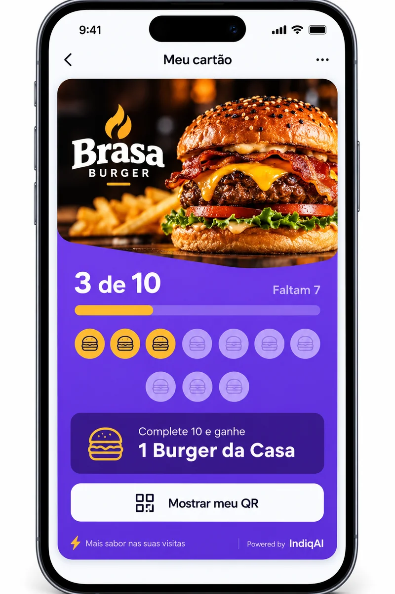
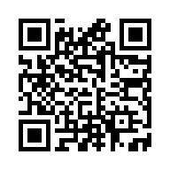
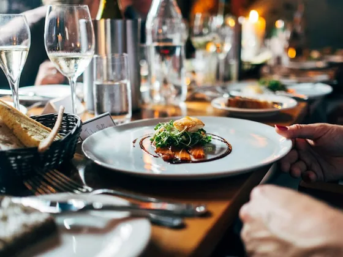
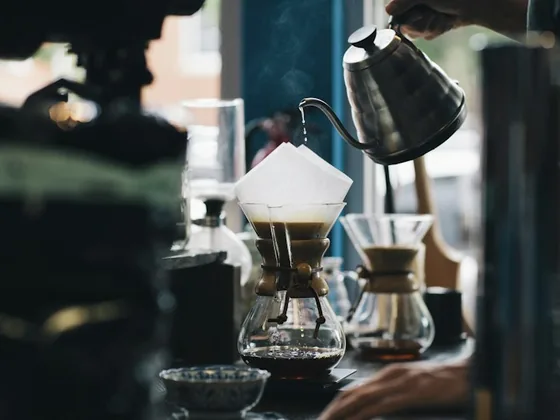
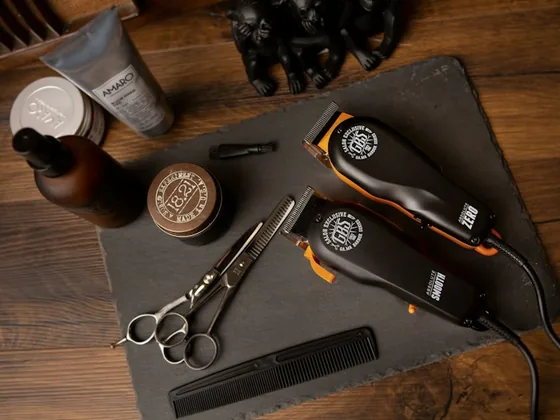
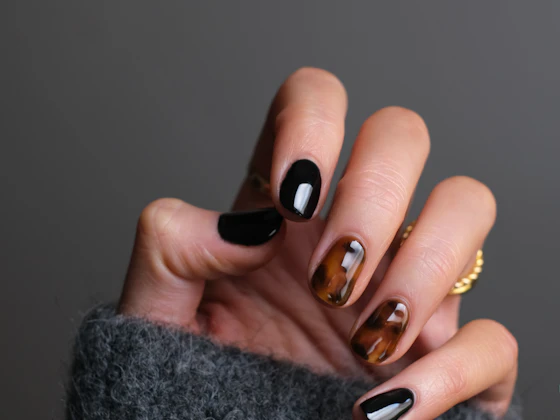
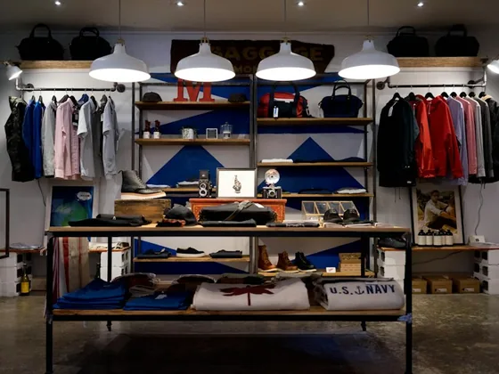

Sua marca.
É o seu negócio que o cliente reconhece. Do primeiro acesso até a recompensa.
Transforme quem passa no seu balcão em quem volta. Crie um cartão fidelidade digital com sua marca e recompense cada nova visita.

Negócios de verdade. Relações que continuam.
Você cuida do seu negócio. A fidelidade fica mais simples.
Coloque sua marca no cartão e escolha o prêmio que vai fazer seu cliente querer voltar.
Mostre seu QR no balcão ou no caixa. Seu cliente abre o cartão direto no celular.
Cada visita aproxima seu cliente da recompensa. E mantém sua marca por perto.
O cliente gosta do seu negócio. O cartão dá aquele empurrãozinho para a próxima visita.

Uma visita.
Mais um selo.
Seu próximo prêmio começa aqui.
Um cartão com a cara do seu negócio, sem cartão de papel para se perder por aí.
É o seu negócio que o cliente reconhece. Do primeiro acesso até a recompensa.
Você escolhe a recompensa e cria um cartão que faz sentido para sua loja.
Cada selo dá continuidade à relação que começou no balcão.
Para quem conhece o cliente pelo nome e gosta de ver essa pessoa de novo.





O que você precisa saber para começar.
O IndiqAI ajuda negócios locais a criar um cartão de fidelidade digital com a própria marca. Você define a recompensa e seus clientes acumulam visitas até chegar ao prêmio.
Não. O cartão pode ser acessado pelo navegador do celular. Assim, seu cliente participa sem precisar instalar um aplicativo.
Sim. A recompensa e as regras do cartão são do seu negócio. Pode ser aquele café, um produto ou um serviço que faça sentido para seus clientes.
Sim. Seu cartão leva a identidade do seu negócio. O cliente reconhece a sua marca em cada visita.
Não. Cada negócio tem o próprio cartão. Os selos e as recompensas ficam ligados à loja onde o cliente participa.
Para negócios que atendem clientes recorrentes: restaurantes, cafeterias, barbearias, salões, academias e outros comércios e serviços locais.
Seu próximo cliente fiel pode ser quem já está no seu balcão.
Vamos criar seu cartão?